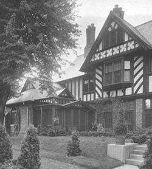

Music Building (formerly the Thompson House)
Address: 8282 Big Bend Boulevard
The Music Building was originally the residence of Frank and Mattie Thompson. It was built in 1910 by James P. Jamieson, who at the time worked for the Philadelphia architectural firm of Cope and Stewardson.
The Thompsons called their home "Arbor Lodge". Mr. Thompson was chairman of the board of Carondelet Foundry. Mrs. Thompson died in 1939. When Frank Thompson died in 1941, he left his estate to the Episcopal Church. The Thompson House became the home of Bishop William Scarlett, the head of the Episcopal Diocese of Missouri. Bishop and Mrs. Scarlett lived there until his retirement in 1952.
Perhaps the Scarletts' most prominent visitor during their time at the residence was Eleanor Roosevelt. She stayed for a few days in March 1949. In her "My Day" column of March 15, 1949, she wrote: "The bishop's house is a delightful home flooded with sunshine and with pleasant grounds around it... The visitors who are really catered to, however, are the birds. They have houses and feeding stations all around..."
From 1952-1960, the building was used as a retreat center for the Episcopal Church. Webster President Sr. Francetta Barberis approached Rt. Reverend George L. Cadigan, Bishop of the Episcopal Diocese of Missouri, about the possibility of purchasing the property for the college. Because of Mr. Thompson's will, the property could not be sold but could be exchanged for another piece of land. The college purchased the estate of Bertram B. Culver (president of the Wrought Iron Range Company) located near Ballas and Ladue Roads for $200,000 and exchanged it for the Thompson property in September 1960.
Once Webster College acquired the property, a renovation was undertaken to make it suitable for classroom use. The renovation has overseen by Hellmuth, Obata, and Kassabaum, architects.
The Music Building was added to the National Register of Historic Places as part of the Webster College-Eden Theological Seminary Collegiate District on December 28, 1982. A ceremony honoring the recognition of this historic district was held June 29, 1984.
References
A haven of flowering beauty is found at the college gate.(1929, February 13). The Web, vol. 5, no. 7, p. 2. Discusses the botanical garden of F.C. Thompson. The garden was sometimes called the "miniature Shaw's Garden".
Keefe, Amanda. (2011, September 28-October 4). Outstanding offices. The Journal, vol. 65, no. 6, p. 7. (read the article)
Once there was a Webster College for Men. (1929, June 3). The Web, vol. 5, no. 11, p. 4. Gives a history of the Webster College for Men, named after Daniel Webster. Webster Groves was named for this college. Also discusses the Benjamin Webster homestead and the Thompson estate.
Thompson House changes gradually, says Sister Eloise. (1960, December 9). The Web, vol. 37, no. 6, p. 8.
Thompson House provides sylvan setting for Webster music makers. (1960, September 16).The Web, vol. 37, no. 1, p. 3.
Thompson Gardens, the beauty spot of Webster, adjacent to college.(1930, May 12). The Web, vol. 6, no. 11, p. 3. Describes the hothouses on the Thompson Estate.
Thompson House to be Art Center. (1960, September 16).The Web, vol. 37, no. 1, pp. 1,3.
Webster loses a friend in Mr. Thompson's death. (1941, June 3). The Web, vol. 17, no. 10, p. 5. Notice of Frank C. Thompson's death on May 16, 1941.